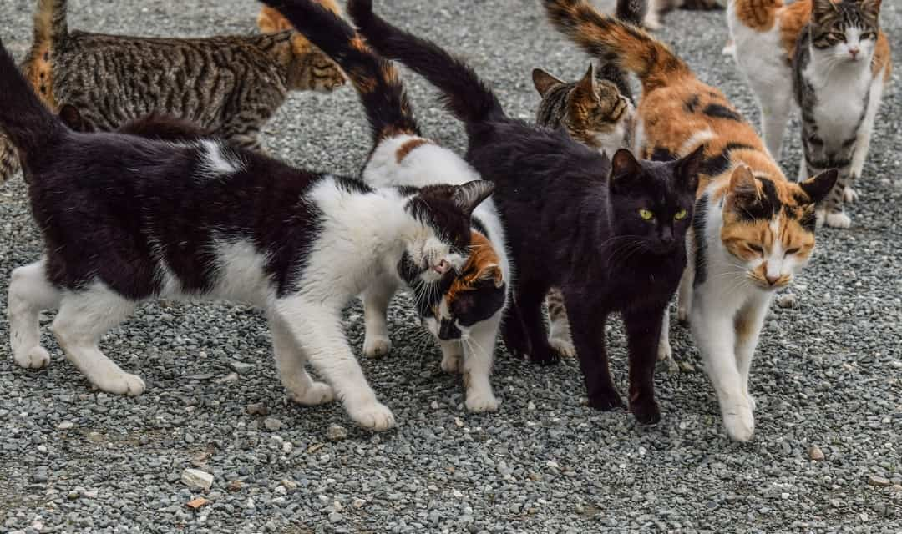

Take Action
There are many ways you, a New York City resident,
can get involded in helping better the lives of your neighborhood cat colonys.
There are many online outlets that can teach you what you need to know to be sucessful and effective at TNR and taking care of community and feral cats! to learn more, scroll down.
How to TNR
Find out everything you need to know about keeping your community cats healthy and helping them be good neighbors. Click here!
Community Colonies
The term "community cats" is used to encompass any unowned cat. Included under this umbrella are feral cats, those who have been lost or abandoned, and cats who might receive food and intermittent care from one or more residents in a community. Feral cats are cats who are too poorly socialized to be placed as a typical pet.
The management for community cat colonies is primarily through TNR and scanning for the presence of a microchip, vaccination, sterilization, ear tipping and, when feasible, microchipping. Learn how to become a Colony caregiver and more by clicking here!
Volunteer
Many organizations rely heavily on volunteers to achieve their goals. There are many opportunities for volunteers to contribute whether it's listening to the public's requests for help, trapping cats, or transporting them to and from clinic appointments. Doing TNR as a volunteer is rewarding, as you will be working with others that are dedicated, knowledgeable and enthusiastic about making a difference to the lives of the cats and the communities that they are a part of, through spay/neuter/vaccinate/return. To find out more click here!